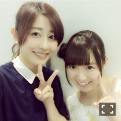
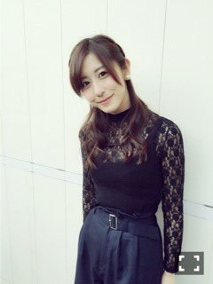

| 2016/05 11 Wed | もうすぐでじょしら く本番。(´>∀<｀)ゝ |
ちはるーむへようこそ(｡･o･｡)ﾉ
GWが過ぎ、本格的にあったかくなってきて、
上着が必要ないんじゃないかっていう程！！
4日は、京都にて全国握手会でした！

初！めーちゃんとペア♡
めーちゃんはね、なんか甘えたくなる存在。
いつも甘えてばかりだから何か支えられたらいいなーって思ってる。
どんな時でもアイドルで、かっこいいよ！素敵だよ！！
めーちゃんらぶ。
ひめと一緒だったから、「中3組すきです！」って方がたくさん来てくれて、尚更ユニット組みたくなりました。
いつか叶うといいな\( ˆoˆ )/
ひめきゅんの皆さん！
そして私に会いに来てくれたちはるーむめいとの皆さん！
本当にありがとうございました。感謝です。
GWラスト、5日には個別握手会でした！
4部
NINE のトップスに、
W closet の付け襟、
bubbles のチェックプリーツスカート！
スクールガールコーデ( ◦˙ ˙◦ )
赤いリボンは、みり愛に借りたよ♡

5部

snidel のレーストップスに、
ZARA のニットキャミに、
MULLER のワイドパンツ！
4部、5部とガラッと雰囲気を変えて
皆さんを驚かすのが好き。笑
違う自分を見て欲しいから\( ˆoˆ )/
来てくれた方、ありがとう。
中々来れない方、早く会えるといいな。
もうすぐで、じょしらくが本番だー！
きゃー！！
そういえば先日、チーム「く」のみんなで、さゆんちで鍋パしたんだよ！
みんなでたくさん笑ってたくさん食べて、凄く楽しかった(｡･o･｡)ﾉ
みんなの親睦が、より深まったよ。
玲香、さゆ、琴子、みり愛！
みんなで頑張るぞー！\( ˆoˆ )/
チーム「く」だけじゃなく、
全チームで良いものを創り上げていく！
前回のじょしらくを超える！(｡-_-｡)
普段はナチュラルメイク派。
すっぴんよりはちょっと気を使う。
ちょっとした抜け感。
そんな私は、今日もスコーンにハマっています(｡･o･｡)ﾉ
毎日、1スコーン。
スコーン三昧。
趣味:スコーン。
えへへ♡
斎藤ちはる
コメント(316)
2016/05/11 00:00